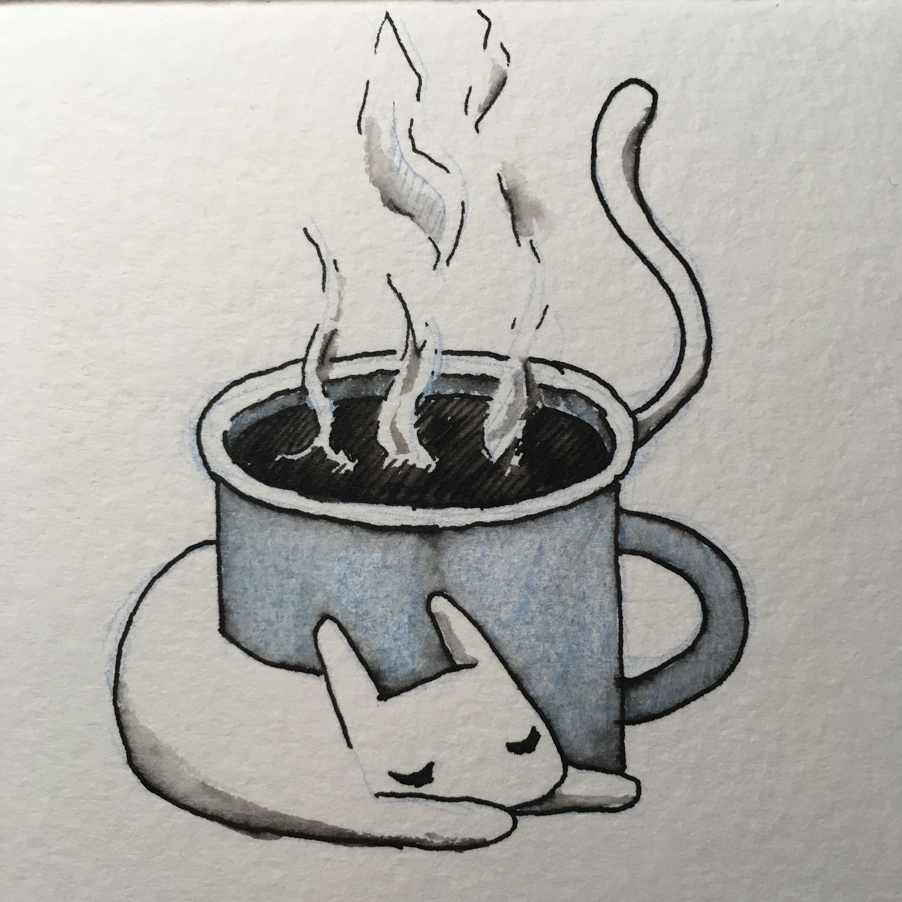
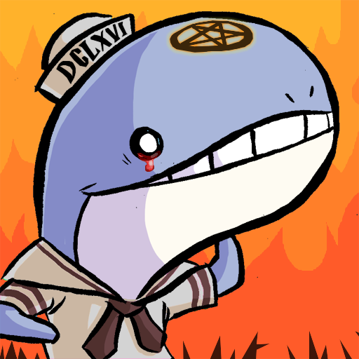

Félix Saparelli
a.k.a. passcod
Here is an archive of the avatars I have used. Since 2015, I commission my avatars from artists with a very loose mandate, letting them do whatever they want within as few parameters as I need. Generally, no detail beyond sizing was requested, although the exact brief varied for each artist.
Bast Lighthouse

Commissioned from PepperRaccoon in
Cybear

Commissioned from Tayruu in
Māhina

Commissioned from Huriana Kopeke-Te Aho in
Sasha

Commissioned from Sarah Lund in
Cup Cat
{kind=link}
Commissioned from Azu in
Snowl Herder

Commissioned from Eoghan Kerrigan in
This was an experiment in commissioning larger pieces and selecting a crop myself for the avatar itself. While I'm pleased with the results, I'm not sure whether I'll continue with this format going forwards. You can see the larger artwork by clicking on the avatar image.
Framing

Commissioned from Luke in
ACLU sketch

Obtained as a donation reward for the ACLU. Only worn on Twitter for the month of
Into Space

Commissioned from Alison Graham in
Nekudotayim Three

Commissioned from Daniel Silva in
Hearty Hug

Commissioned from Sam Orchard in
Demon mask bird

Commissioned from Anne Szabla in
Sailor whale

Commissioned from Sara Goetter in
In
Beaver with a jetpack

Commissioned from Mason Williams a.k.a. Tailsteak in
Léa and me

In
Close-up of me

From
Blue screen of code

Around